Контрактные двигатели Audi A4
Контрактные двигатели для Audi A4 — 38 шт. в наличии. В карточке указаны пробег, номер агрегата и OEM-номера: сверьте со своим или пришлите VIN, проверим за вас.

Контрактный двигатель Audi 80/90/A4/A6
150 л.с., ABC, пробег 109 000 км
199 500 ₽
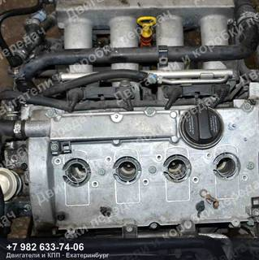
Контрактный двигатель Audi A4
170 л.с., AMB, пробег 131 000 км
186 500 ₽
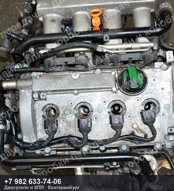
Контрактный двигатель Audi A4 8E
170 л.с., AMB, пробег 36 000 км
226 500 ₽
без фото
Контрактный двигатель Audi A4 8E
170 л.с., AMB, пробег 66 000 км
цена по запросу
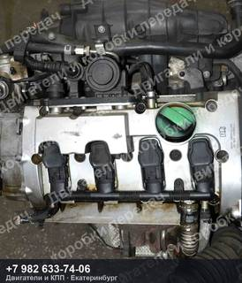
Контрактный двигатель Audi A4
2.0 л, 200 л.с., BGB, пробег 105 000 км
120 000 ₽
без фото
Контрактный двигатель Audi A4 8EC
2.0 л, 200 л.с., BWE, номер 6AT
цена по запросу
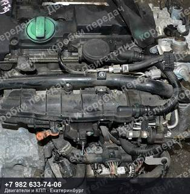
Контрактный двигатель Audi A4 8EC
2.0 л, 200 л.с., BWE, номер 6AT
146 500 ₽
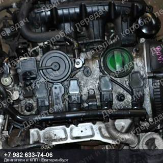
Контрактный двигатель Audi A4/A5 8K
1.8 л, 160 л.с., CDH/CDHB, пробег 104 000 км
199 500 ₽
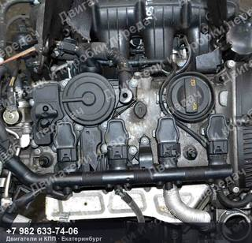
Контрактный двигатель Audi A4/A5 8K
1.8 л, 160 л.с., CDH/CDHB, пробег 109 000 км
199 500 ₽
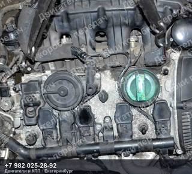
Контрактный двигатель Audi A4/A5 8K
1.8 л, 160 л.с., CDH/CDHB, пробег 73 000 км
199 500 ₽
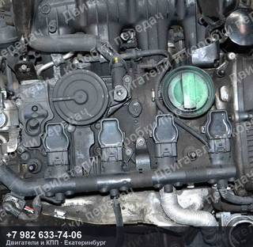
Контрактный двигатель Audi A4/A5 8K
1.8 л, 160 л.с., CDH/CDHB, пробег 87 000 км
199 500 ₽
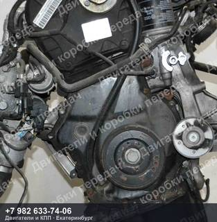
Контрактный двигатель Audi A4/A5 8K
1.8 л, 160 л.с., CDH/CDHB, пробег 91 000 км
199 500 ₽
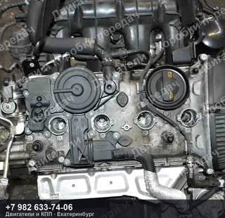
Контрактный двигатель Audi A4/A5 8K
1.8 л, 160 л.с., CDH/CDHB, пробег 105 000 км
199 500 ₽
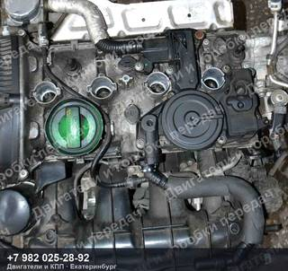
Контрактный двигатель Audi A4/A5 8K
1.8 л, 160 л.с., CDH/CDHB, пробег 117 000 км
199 500 ₽
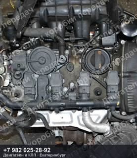
Контрактный двигатель Audi A4/A5 8K
1.8 л, 160 л.с., CDH/CDHB, пробег 84 000 км
199 500 ₽
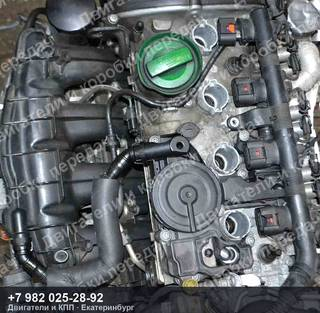
Контрактный двигатель Audi A4/A5/A6 8K
2.0 л, 180 л.с., CDN/CDNB, номер CVT
239 500 ₽
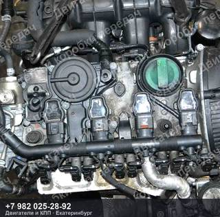
Контрактный двигатель Audi A4/A5/A6 8K
2.0 л, 180 л.с., CDN/CDNB, номер CVT
239 500 ₽
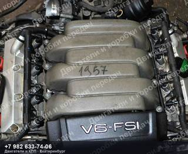
Контрактный двигатель Audi A4/A5/S4/S5
265 л.с., CAL/CALA, пробег 120 000 км
293 000 ₽
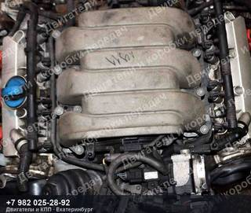
Контрактный двигатель Audi A4/A5/S4/S5
265 л.с., CAL/CALA, пробег 131 000 км
293 000 ₽
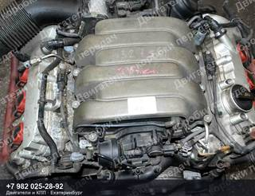
Контрактный двигатель Audi A4/A6/S4/S6
3.2 л, 256 л.с., AUK/BKH, пробег 105 000 км
239 500 ₽

Контрактный двигатель Audi A4/A6/S4/S6
3.2 л, 256 л.с., AUK/BKH, пробег 88 000 км
239 500 ₽
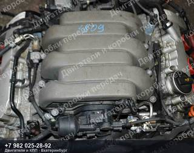
Контрактный двигатель Audi A4/A6/S4/S6
3.2 л, 256 л.с., AUK/BKH, пробег 105 000 км
239 500 ₽
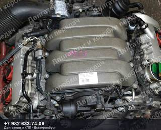
Контрактный двигатель Audi A4/A6/S4/S6
3.2 л, 256 л.с., AUK/BKH, пробег 137 000 км
239 500 ₽
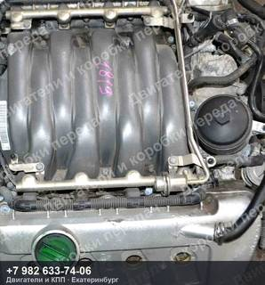
Контрактный двигатель Audi A4/S4 8E/B6
4.2 л, 344 л.с., BBK, пробег 125 000 км
239 500 ₽
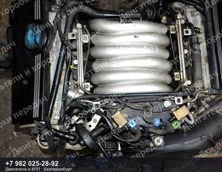
Контрактный двигатель Audi A4/S4
170 л.с., BDV, пробег 118 000 км
125 500 ₽
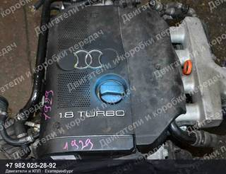
Контрактный двигатель Audi A4/S4 B7
163 л.с., BFB, пробег 105 000 км
180 000 ₽
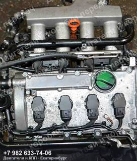
Контрактный двигатель Audi A4/S4 8E/B7
163 л.с., BFB, пробег 50 000 км
199 500 ₽
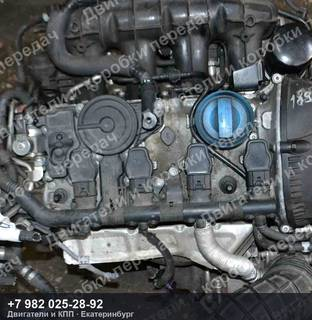
Контрактный двигатель Audi/Volkswagen A4/A5 8K
1.8 л, 160 л.с., CDH/CDHB, пробег 100 000 км
199 500 ₽
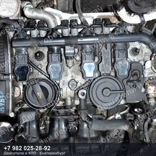
Контрактный двигатель Audi/Volkswagen A4/A5 8T
2.0 л, 211 л.с., CDN/CDNC, пробег 105 000 км
239 500 ₽
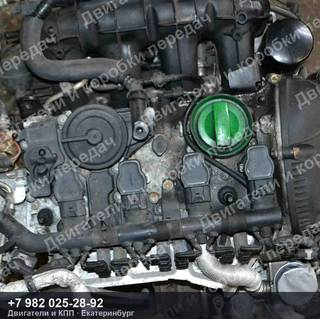
Контрактный двигатель Audi/Volkswagen A4/A5 8T
2.0 л, 211 л.с., CDN/CDNC, пробег 84 000 км
239 500 ₽
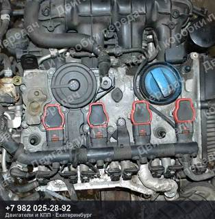
Контрактный двигатель Audi/Volkswagen A4/A5 8K
2.0 л, 211 л.с., CDN/CDNC, пробег 84 000 км
239 500 ₽
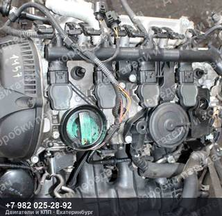
Контрактный двигатель Audi/Volkswagen A4/A5 8T
2.0 л, 211 л.с., CDN/CDNC, пробег 97 000 км
219 500 ₽
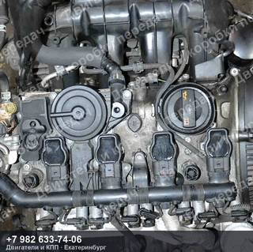
Контрактный двигатель Audi/Volkswagen A4/A5 8T
2.0 л, 211 л.с., CDN/CDNC, пробег 99 000 км
239 500 ₽

Контрактный двигатель Audi/Volkswagen A4/A6/PASSAT
2.0 л, 130 л.с., ALT, пробег 50 000 км
160 000 ₽

Контрактный двигатель Audi/Volkswagen A4/A6/PASSAT
2.0 л, 130 л.с., ALT, пробег 49 000 км
160 000 ₽
без фото
Контрактный двигатель Audi/Volkswagen A4/A6/PASSAT
2.0 л, 130 л.с., ALT, пробег 64 000 км
цена по запросу

Контрактный двигатель Audi/Volkswagen A4/A6/PASSAT
2.0 л, 130 л.с., ALT, пробег 72 000 км
146 500 ₽

Контрактный двигатель Audi/Volkswagen A4/A6/PASSAT
125 л.с., APT, пробег 35 000 км
126 500 ₽
Не нашли свой контрактный двигатель Audi A4?
Пришлите VIN или марку с моделью — проверим по складу и подберём то, что точно встанет на вашу машину. Ответим и подскажем, даже если у нас этого нет.